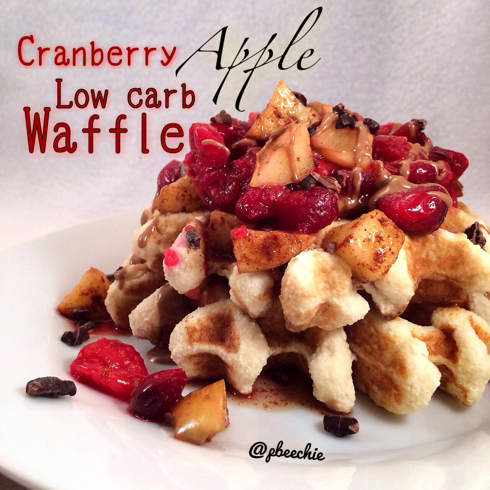
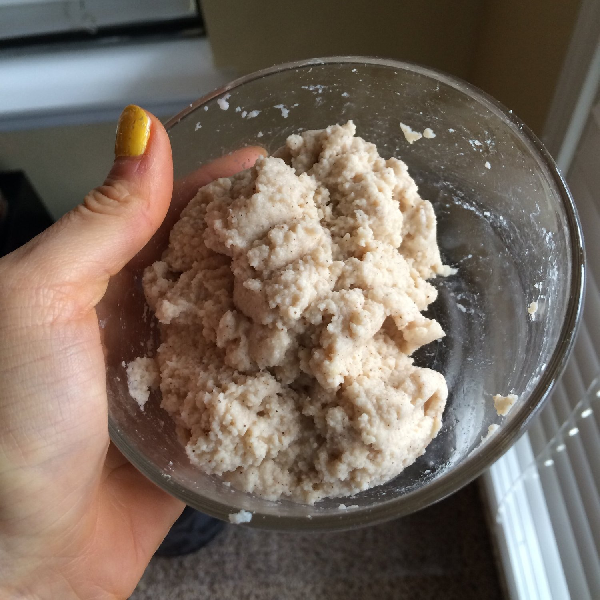
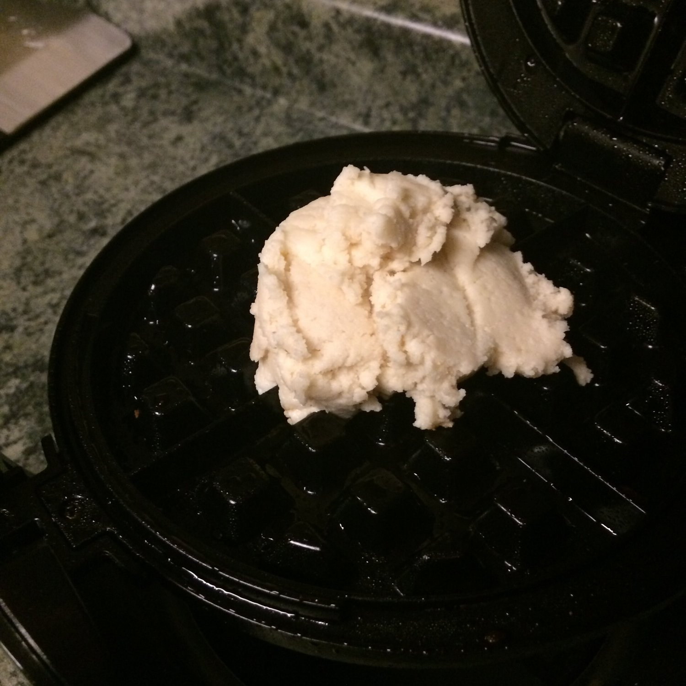
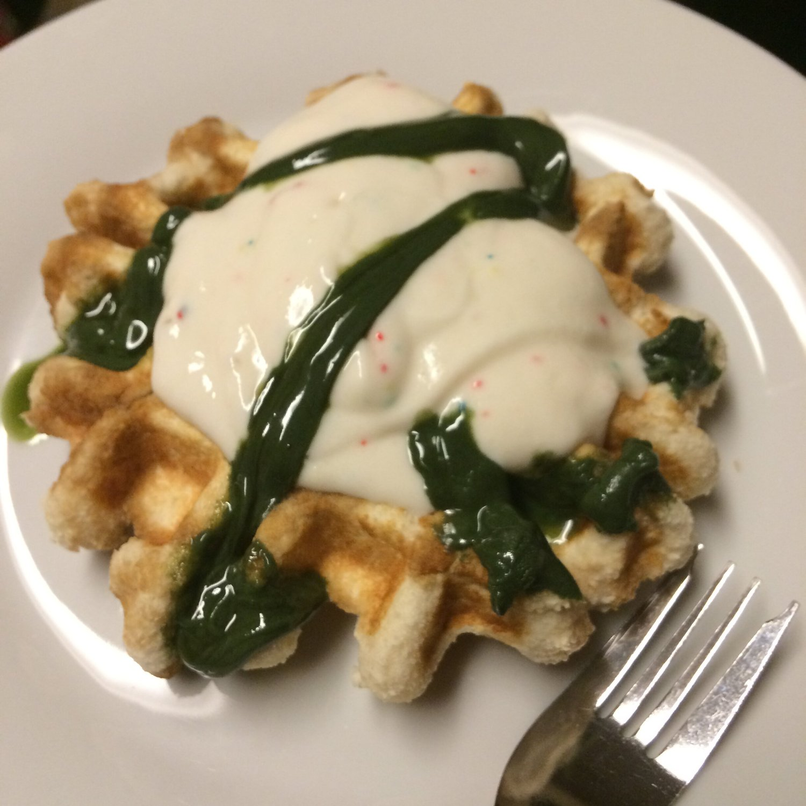
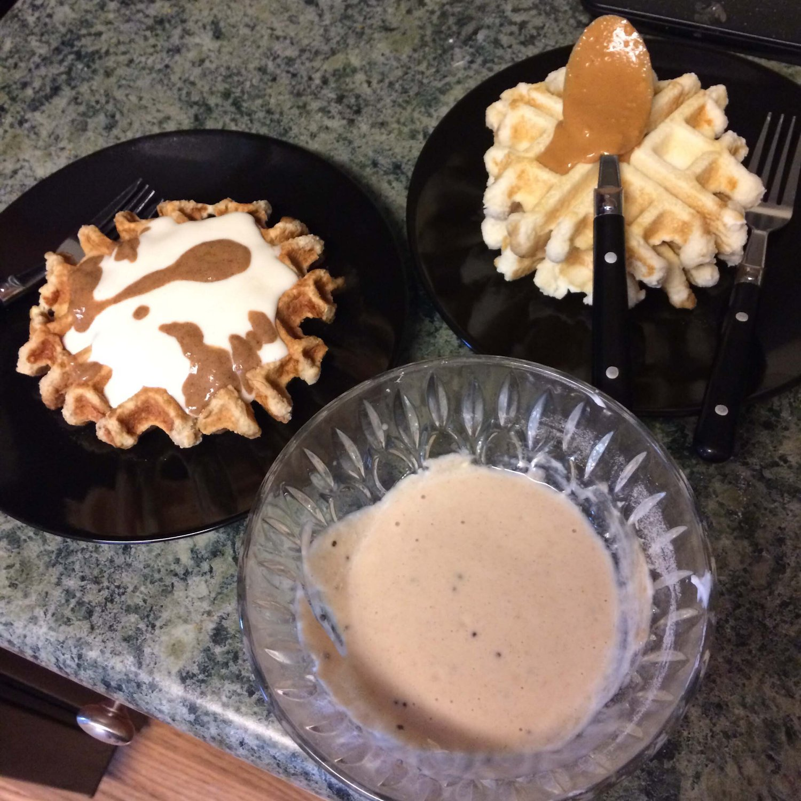
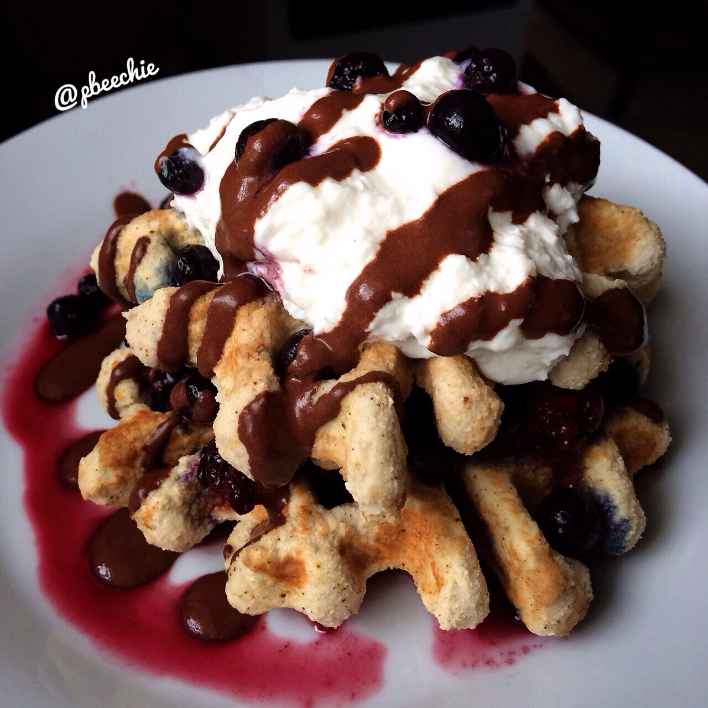
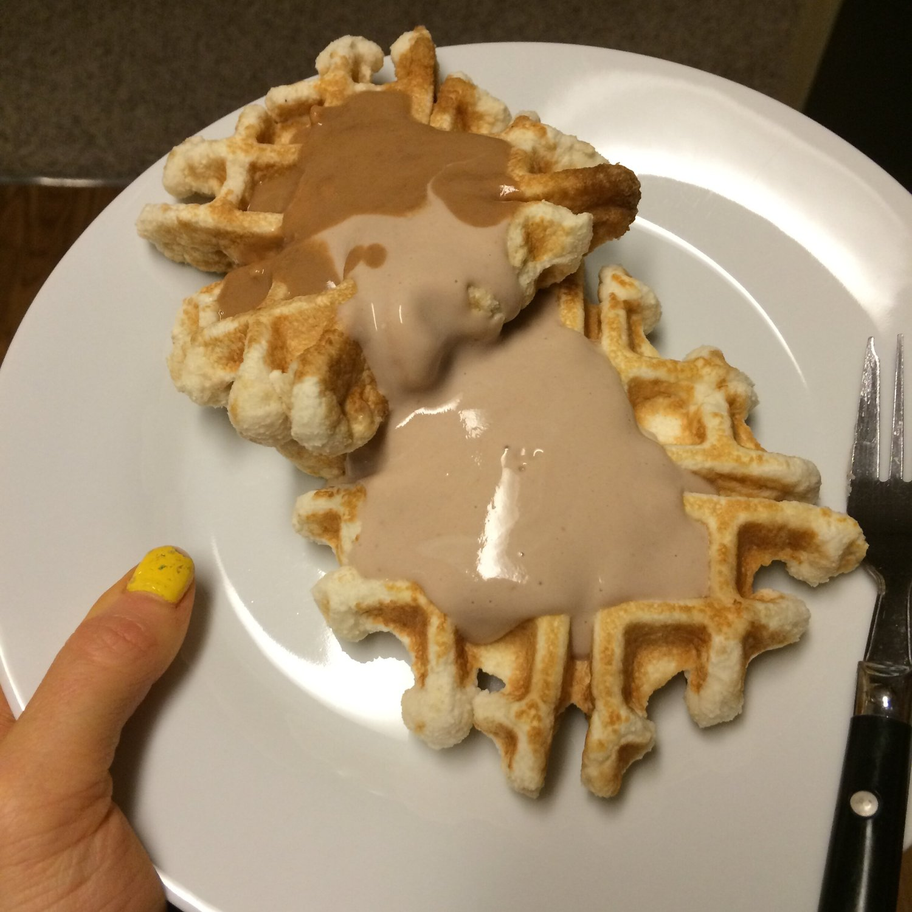
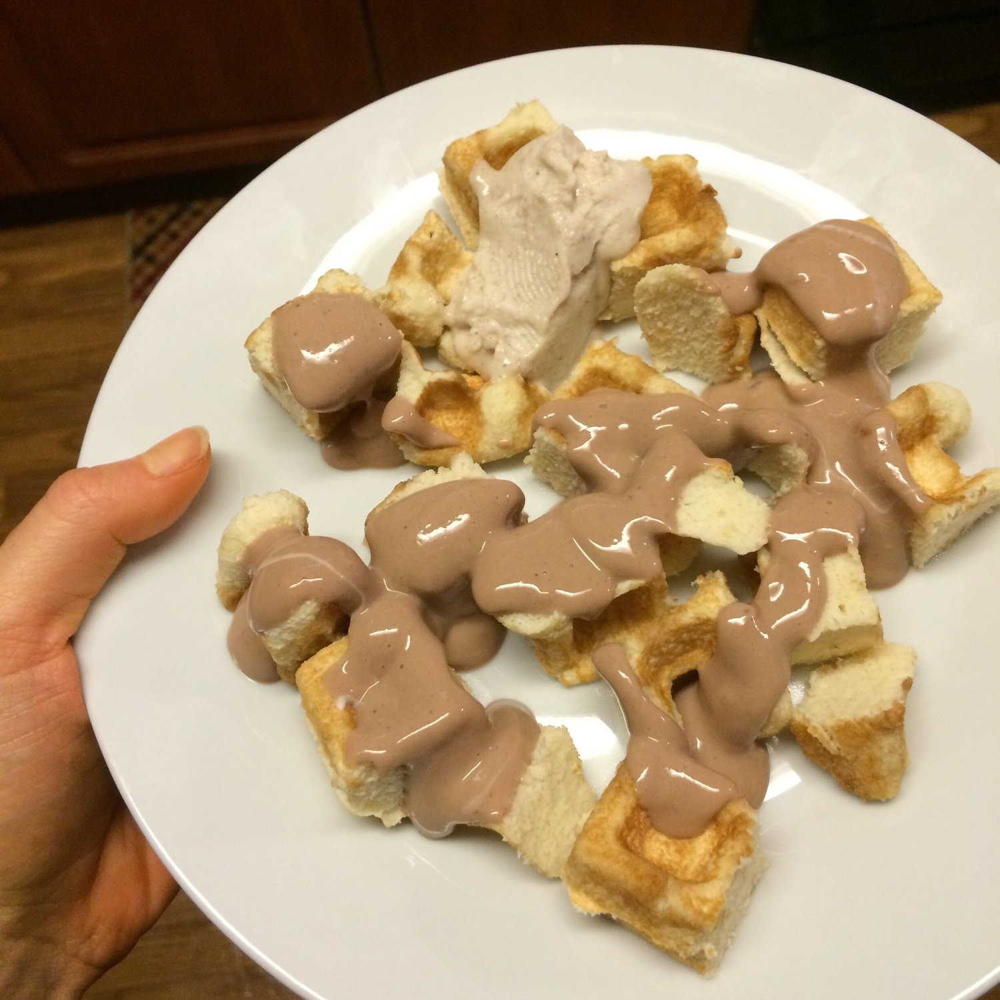

Low Carb Paleo Waffle
Soo I've been trying to make a good low carb, paleo waffle for lower carb days but every time it comes out inadequate and just sad. Then of course I ACCIDENTALLY made one yesterday. So perfect and easy (just 4 main ingredients!!) that I haaaad to make another batch to share the recipe. Within 24 hours, I've made 4 batches (3 for me and one for the boyfrannn :p) and I'm pretty sure there will be more in my near future. O_O 
- 1/3 cup coconut flour
- 3 TBSP unsweetened almond milk
- 3 egg whites
- 1 tsp vanilla extract
- 1 tsp baking powder
- 1 stevia packet
Mix everything evenly in a bowl! At first the coconut flour will clump so keep mixing until everything is evenly distributed and the lumps are out. (It will be thick. Don't panic and assume everything is wrong. It's going to seem as if there's no chance in hell that this will work, remember that I said I accidentally made this recipe? Yeah, didn't expect it to work.) Anyways. Place half of the batter in a waffle maker that's been sprayed with nonstick spray. The way I do it is basically form a ball with the batter, place it in the center, and shut the waffle maker on it. Cook! Repeat for the second half of the batter.I topped my waffles with apple microwaved with cinnamon, cranberries microwaved with stevia, raw cacao nibs, and Rawtella (raw 'white chocolate' hazelnut butter).
Nutritional information for 1 waffle: 122 calories; 4 g fat, 12 g carbs (8 g fiber), and 10 g proteinTo illustrate how thick the batter is


Waffle Round Up
Waffles with a COR-Fetti Protein Fluff and Blue Algae Nut Butter
Right: Waffles with a Cookies and Cream Protein Fluff and White Chocolate Macadamia Nut ButterLeft: Pumpkin Spice Waffles with a Peanut Butter Protein Fluff and Pumpkin Peanut Butter
Gingerbread Waffles with microwaved blueberries/blackberries, a coconut whip, and a healthy chocolate drizzle
Chocolate Raspberry (stevia) Waffles with a rocky road protein icing and Razzle Dazzle PB Crave (raspberry white chocolate pb).
Chopped Waffle with a rocky road protein icing and thinned out vanilla cupcake coconut butter by sweet spreads.